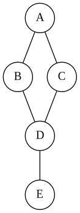
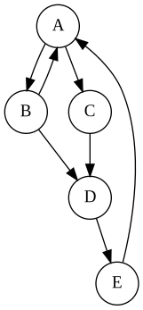
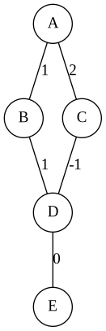
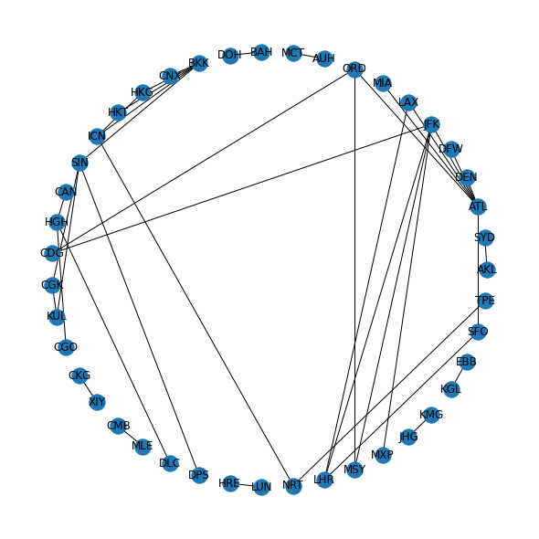
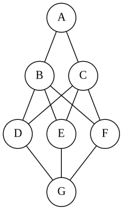

Graphs and Networks
Atabey Kaygun
Monday, May 9th, 2022
A graph consists of two sets:
V = {A, B, C, D, E}
E = {(A,B), (A,C), (B,D), (C,D), (D,E)
A graph consists of nodes and connections:

V = {A, B, C, D, E}
E = {(A,B), (A,C), (B,D), (C,D), (D,E)
The edges in an undirected graph have no direction:
The edges in a directed graph have direction:

The edges in a weighted graph have weights:

Any data where we can relate two data points
Remember HW2?

GraphViz is an excellent graph definition language and visualization framework.
graph {
A -- { B C } -- { D E F } -- G;
}
The three main graph toolkits are
DEMO
DEMO